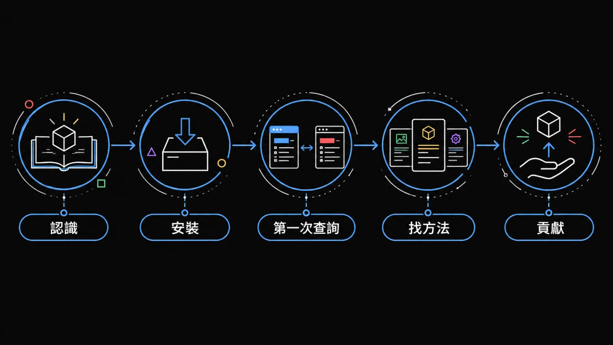

先裝好，做一次只讀的查詢，再依你的任務找方法。這個站放的是 Revit MCP 的安裝步驟、方法（Domain）、工作流程（Skill）與工具（Tool）索引。

一句話：BIM_MCP 讓你用講人話的方式操作 Revit——AI 讀懂需求，透過 239 個工具直接改模型、查資料、跑法規檢核。
三層：Skill（61・何時觸發）→ Domain（94・方法與法規）→ Tool（239・實際動 Revit）。
第一次來？先看 三層架構 V2（5 分鐘懂全貌），再挑一個 Skill 試跑。完整哲學看 22 命題。
收編波＝把 fork 貢獻一波波手動搬進主線的流程。
Skill / Domain / Tool 的分工，5 分鐘讀完。
2 · 安裝從部署指南的快速安裝開始，裝好外掛與 MCP 伺服器。
3 · 第一次成功用查詢工具核對專案與視圖名稱，確認連線沒問題；不會改動模型。
4 · 找方法法規檢討、數量、編號、視圖整理……先找方法，再找流程。
5 · 貢獻想把 hj-pr-proposal 裝進 Claude Code，或提案新增 SOP、Skill、工具。
卡住了看不到外掛、無法連線、結果不符合預期，從症狀找入口。
安裝到你的 Revit：Nice3point、Release.R{YY}、setup.ps1。
debug5 個經典問題與 5/18 demo 4 個修復。
Skill / Domain / Tool 的分工。
guard rails被動就緒 / 資料誠實 / Domain method / Active Re-Anchoring。2026-05-22 新增第四條。
philosophyRevit MCP 的設計命題。
decision把 FAIL 從 0/1 改成可談判的 A/B/C/D。
evidence成本曲線、返工、early mover 論述。
由 repo 內 domain/*.md 建出的 SOP 索引。
skillsAI workflow orchestration 索引。
tools執行層完整索引，由 registerRevitTools() 產生；標示哪些會動到模型。
playbook一次實作演練寫成三章：量從哪裡來、怎麼進模型、怎麼自己檢核自己。
工具 220→239、domain 90→94。逐 commit 列出收了什麼、沒收什麼（附紀錄中的理由或「未記錄理由」），並明講只在 macOS 驗過。
2026-10-12 · 更新公告工具 192→221。改的是 add-in 本體，只 git pull 不會有任何變化——頁內有四步升級流程、停靠面板用法、以及 29 支新工具清單。
2026-07-09 · 里程碑四位貢獻者的 fork 內容逐波手動移植：+43 工具、+6 domain、+17 skill，dispatcher 零移除，跨版本 build 全過。名單見致謝頁。
掃描視圖套管 → 幾何萃取分類 → RC 法規判定（H/3、禁開區、相鄰淨距）；PR #68 收編 + v2 續行。
2026-06 · hands-on掃描圖層 → 預覽健檢 → 批次建模；Wave 1 批次建模 + Wave 2 柱號對應三模式、自動單位偵測、DXF/DWG 降級。
2026-06 · hands-on雙軸盤點 → 簽章比對 → 你來把關；從一根「名字寫 30、其實是 24」的柱看簽章鐵則。
2026-05 · 五月練習五月小聚的實作頁，直接打開就能照著做。
2026-05 · 導讀練習前先讀：這份練習要你觀察什麼。